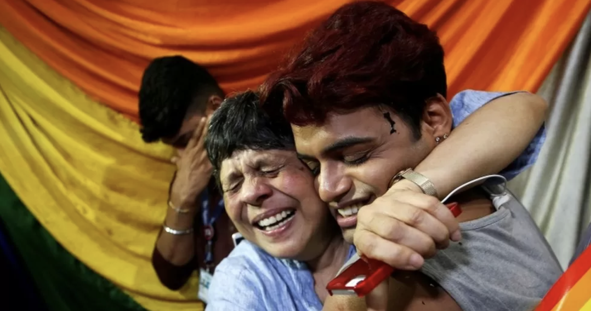

Common Questions
What have the judges said?
Thursday's decision was delivered by a five-judge bench headed by India's outgoing chief justice Dipak Misra and was unanimous.
Reading out the judgement, he said: "Criminalising carnal intercourse is irrational, arbitrary and manifestly unconstitutional."
Another judge, Indu Malhotra, said she believed "history owes an apology" to LGBT people for ostracising them.
Justice DY Chandrachud said the state had no right to control the private lives of LGBT community members and that the denial of the right to sexual orientation was the same as denying the right to privacy.
The ruling effectively allows gay sex among consenting adults in private.
What is section 377?
It is a 157-year-old colonial-era law which criminalises certain sexual acts as "unnatural offences" that are punishable by a 10-year jail term.
Such interventions need to happen at every level, adds Vashista, who provides trainings on sexual orientation and gender identity at schools, corporations and other venues. At workplaces, for example, Indians still face enormous pressure to conform. “A client comes and tells me, ‘I have to live a lie and pretend to be someone else at work,’” she says. “It takes a mental toll on them.”
The law punishes, in its own words, "carnal intercourse against the order of nature with any man, woman or animal".
While the statute criminalises all anal and oral sex, it has largely affected same-sex relationships.
Human rights groups say police have used the statute to harass and abuse members of the LGBT community.
How did we get to this point?
It's been a tortuous route. A bid to repeal section 377 was initiated in 2001 and was batted between court and government until 2009, when the Delhi High Court ruled in favour of decriminalisation.
Several political, social and religious groups then mobilised to restore the law and in 2013 the Supreme Court struck down the High Court ruling.
Anti-section 377 activists then submitted a "curative petition" - a formal request to review an earlier court order perceived as a "miscarriage of justice" - and in 2016 the Supreme Court decided to revisit its ruling.
What has the LGBT reaction been to the latest ruling?
One of joy given that the community has fought vigorously to strike down the law.
Equal rights activists had argued that the very existence of such a law was proof of discrimination based on sexual orientation.
LGBT activist Harish Iyer told the BBC: "I'm absolutely elated. It's like a second freedom struggle where finally we have thrown a British law out of this country... I think the next step would be to get anti-discrimination laws in place, or anti-bullying laws."
How have political parties reacted?
The governing BJP party has said it would leave the decision to the Supreme Court. However, one of its members said he was disappointed with the verdict.
Subramanian Swamy, known for making provocative comments, said: "It could give rise to an increase in the number of HIV cases."
Meanwhile, the main opposition Congress party has welcomed the ruling, saying they "hope this is the beginning of a more equal and inclusive society".
The UN has also welcomed the ruling, saying "sexual orientation and gender expression form an integral part of an individual's identity the world over".
What else was said in the ruling?
The court said other aspects of section 377 dealing with unnatural sex with animals and children would remain in force.
The judges also explicitly said that they only ruled on the constitutional validity of section 377 and were not looking at it in terms of other rights such as those related to marriage or inheritance.
It remains too early to say what this will translate to in the longer term. Author and commentator Sandip Roy told the BBC that although the ruling was a cause for celebration, there were still hurdles to overcome, and a need for anti-discrimination laws.
"I think we would be foolish to think that this is the end of the fight," he said.